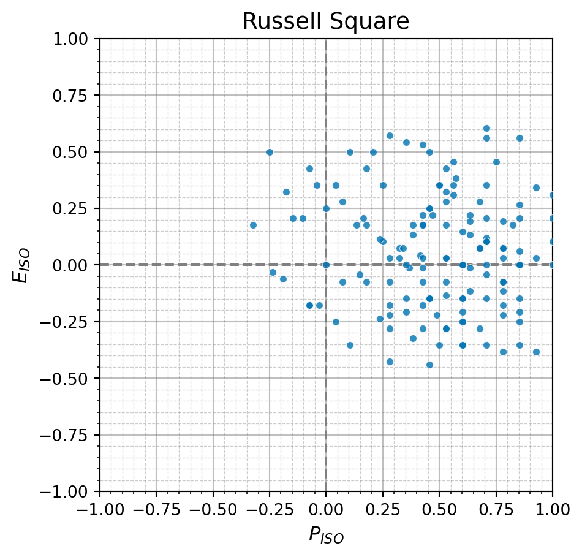
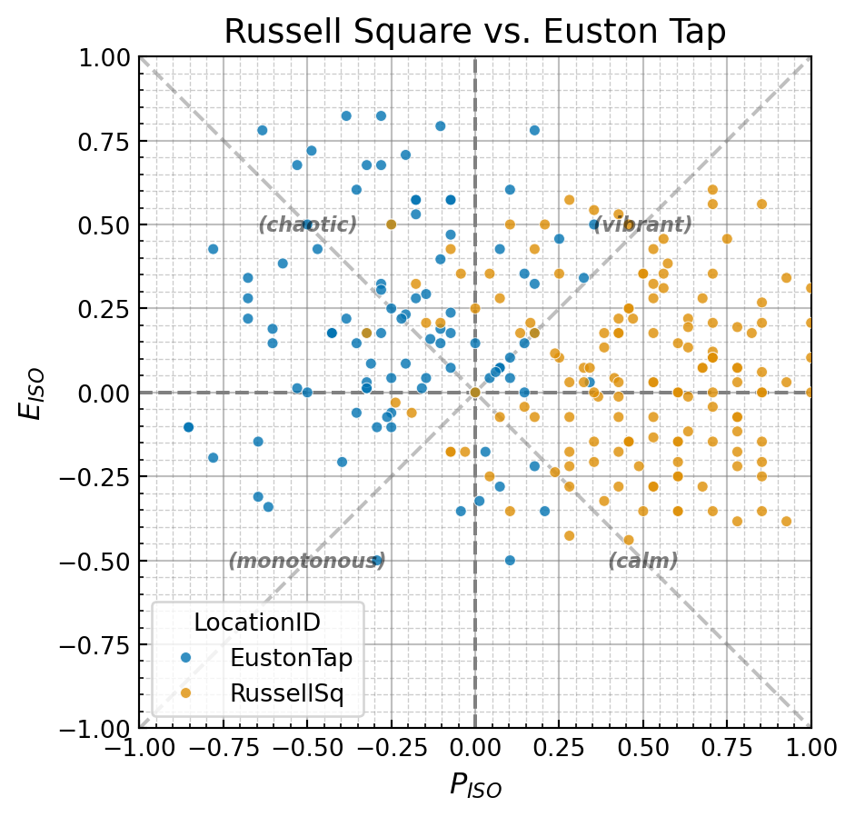
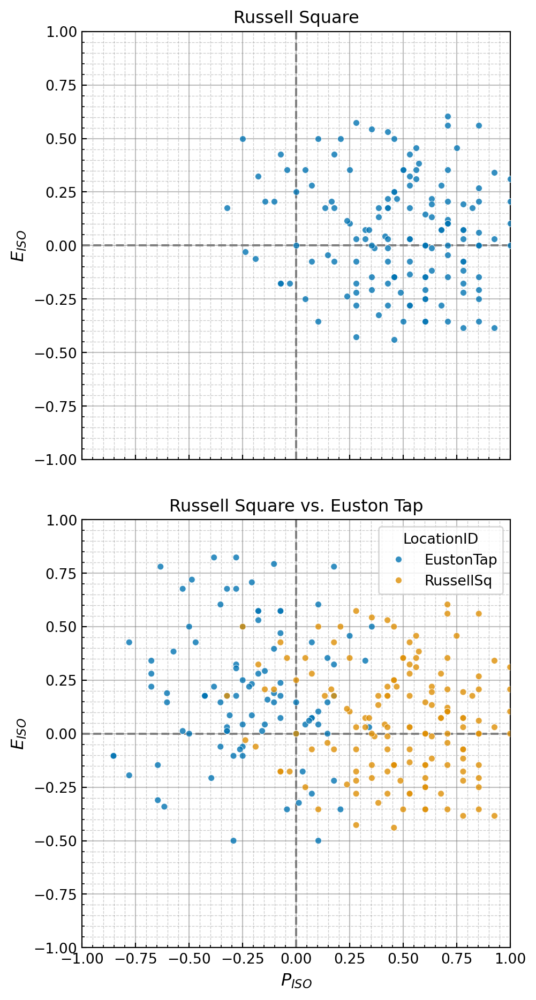
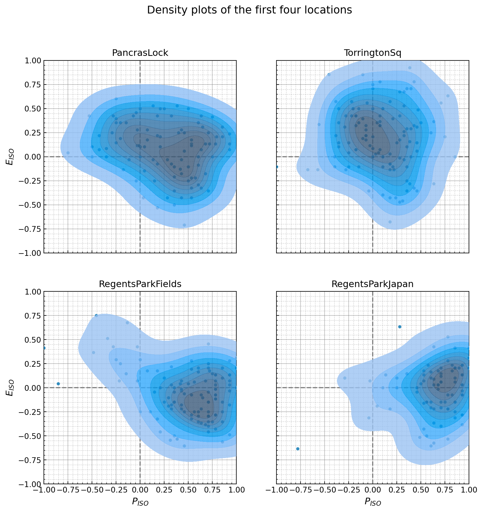
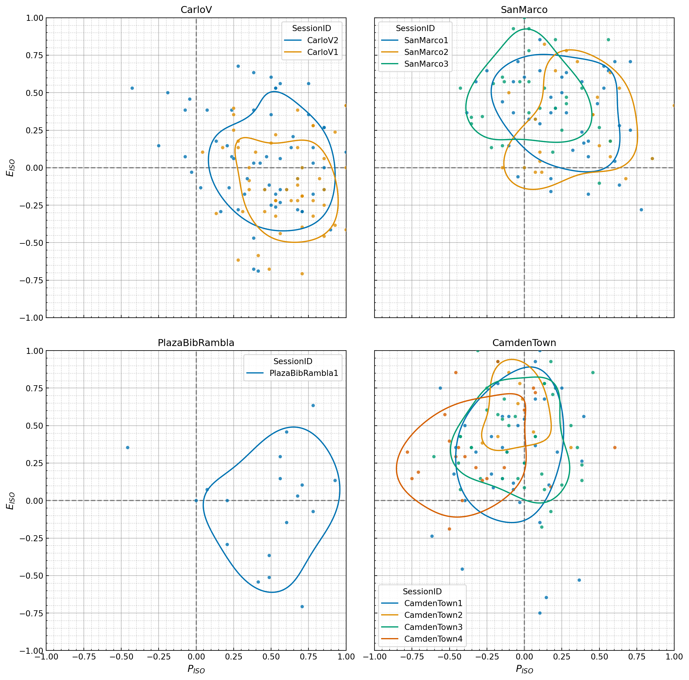
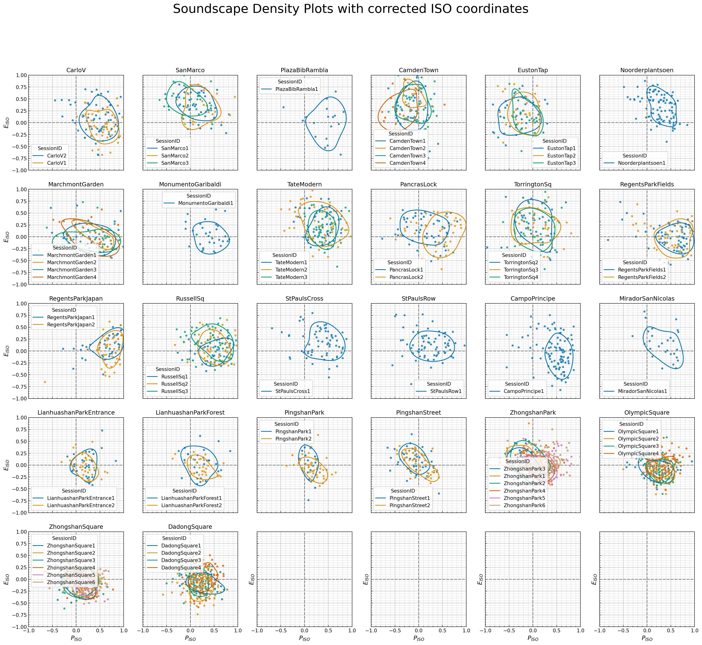

By Andrew Mitchell, Lecturer, University College London
Background
Soundscapy is a python toolbox for analysing quantitative soundscape data. Urban soundscapes are typically assessed through surveys which ask respondents how they perceive the given soundscape. Particularly when collected following the technical specification ISO 12913, these surveys can constitute quantitative data about the soundscape perception. As proposed in How to analyse and represent quantitative soundscape data(Mitchell, Aletta, & Kang, 2022), in order to describe the soundscape perception of a group or of a location, we should consider the distribution of responses. Soundscapy’s approach to soundscape analysis follows this approach and makes it simple to process soundscape data and visualise the distribution of responses.
For more information on the theory underlying the assessments and forms of data collection, please see ISO 12913-Part 2, The SSID Protocol(Mitchell, et al., 2020), and How to analyse and represent quantitative soundscape data.
This Notebook
The purpose of this notebook is to give a brief overview of how Soundscapy works and how to quickly get started using it to analyse your own soundscape data. The example dataset used is The International Soundscape Database (ISD) (Mitchell, et al., 2021), which is publicly available at Zenodo and is free to use. Soundscapy expects data to follow the format used in the ISD, but can be adapted for similar datasets.
Installation
To install Soundscapy with pip:
pip install soundscapy
Working with Data
Loading and Validating Data
Let’s start by importing Soundscapy and loading the International Soundscape Database (ISD):
# Import Soundscapyimport soundscapy as sspyfrom soundscapy.databases import isd# Load the ISD datasetdata = isd.load()print(data.shape)# Validate the dataset with ISD-custom checksdf, excl = isd.validate(data)print(f"Valid samples: {data.shape[0]}, Excluded samples: {excl.shape[0]}")
Calculating ISOPleasant and ISOEventful Coordinates
Next, we’ll calculate the ISOCoordinate values:
data = sspy.surveys.add_iso_coords(data)data[["ISOPleasant", "ISOEventful"]].round(2).head()
ISOPleasant
ISOEventful
0
0.22
-0.13
1
-0.43
0.53
2
0.68
-0.07
3
0.60
-0.15
4
0.46
-0.15
Soundscapy expects the PAQ values to be Likert scale values ranging from 1 to 5 by default, as specified in ISO 12913 and the SSID Protocol. However, it is possible to use data which, although structured the same way, has a different range of values. For instance this could be a 7-point Likert scale, or a 0 to 100 scale. By passing these numbers both to validate_dataset() and add_paq_coords() as the val_range, Soundscapy will check that the data conforms to what is expected and will automatically scale the ISOCoordinates from -1 to +1 depending on the original value range.
Soundscapy includes methods for several filters that are normally needed within the ISD, such as filtering by LocationID or SessionID.
# Filter by locationcamden_data = isd.select_location_ids(data, ["CamdenTown"])print(f"Camden Town samples: {camden_data.shape[0]}")# Filter by sessionregent_data = isd.select_session_ids(data, ["RegentsParkJapan1"])print(f"Regent's Park Japan session 1 samples: {regent_data.shape[0]}")# Complex filtering using pandas querywomen_over_50 = df.query("gen00 == 'Female' and age00 > 50")print(f"Women over 50: {women_over_50.shape[0]}")
Camden Town samples: 105
Regent's Park Japan session 1 samples: 46
Women over 50: 133
All of these filters can also be chained together. So, for instance, to return surveys from women over 50 taken in Camden Town, we would do:
isd.select_location_ids(data, "CamdenTown").query("gen00 == 'Female' and age00 > 50")
LocationID
SessionID
GroupID
RecordID
start_time
end_time
latitude
longitude
Language
Survey_Version
...
THD_THD_Max
THD_Min_Max
THD_Max_Max
THD_L5_Max
THD_L10_Max
THD_L50_Max
THD_L90_Max
THD_L95_Max
ISOPleasant
ISOEventful
58
CamdenTown
CamdenTown1
CT108
531
2019-05-02 12:10:52
2019-05-02 12:26:45
51.539124
-0.142624
eng
engISO2018
...
-2.12
-4.44
72.28
45.05
37.19
13.40
-1.88
-2.45
-1.464466e-01
0.146447
63
CamdenTown
CamdenTown1
CT111
533
2019-05-02 12:29:42
2019-05-02 12:58:56
51.539124
-0.142624
eng
engISO2018
...
NaN
NaN
NaN
NaN
NaN
NaN
NaN
NaN
-4.142136e-01
-0.457107
104
CamdenTown
CamdenTown3
CT311
593
2019-05-20 12:24:14
2019-05-20 12:28:27
51.539124
-0.142624
eng
engISO2018
...
-4.73
-8.48
76.20
44.21
34.12
11.04
-4.83
-5.99
-1.464466e-01
0.146447
105
CamdenTown
CamdenTown3
CT311
623
2019-05-20 12:25:00
2019-05-20 12:30:00
51.539124
-0.142624
eng
engISO2018
...
-4.73
-8.48
76.20
44.21
34.12
11.04
-4.83
-5.99
1.338835e-01
0.073223
122
CamdenTown
CamdenTown3
CT324
609
2019-05-20 13:51:00
2019-05-20 13:57:00
51.539124
-0.142624
eng
engISO2018
...
-1.53
-9.57
75.83
43.30
33.73
11.88
-5.59
-7.44
1.767767e-01
0.926777
128
CamdenTown
CamdenTown3
CT328
617
2019-05-20 14:13:00
2019-05-20 14:16:00
51.539124
-0.142624
eng
engISO2018
...
-5.89
-1.76
71.56
45.97
38.80
17.59
2.64
1.16
-4.393398e-01
0.250000
132
CamdenTown
CamdenTown4
CT403
1220
2019-07-13 12:31:40
2019-07-13 12:35:30
51.539140
-0.142648
eng
engISO2018
...
-1.32
-3.24
71.78
49.81
42.16
16.53
0.54
-0.65
6.898042e-17
0.603553
7 rows × 144 columns
Plotting
Soundscapy offers various plotting functions to visualize soundscape data. Let’s explore some of them:
/var/folders/6t/7h8wn9n92w5f24ml_bkwck9m0000gn/T/ipykernel_8158/3448120047.py:5: ExperimentalWarning: `ISOPlot` is currently under development and should be considered experimental. `ISOPlot` implements an experimental API for creating layered soundscape circumplex plots. Use with caution.
ISOPlot(data=isd.select_location_ids(data, ["RussellSq"]), title="Russell Square")
/var/folders/6t/7h8wn9n92w5f24ml_bkwck9m0000gn/T/ipykernel_8158/3448120047.py:13: ExperimentalWarning: `ISOPlot` is currently under development and should be considered experimental. `ISOPlot` implements an experimental API for creating layered soundscape circumplex plots. Use with caution.
ISOPlot(


The ISOPlot class also allows us to make this set of plots in one go, as a single figure. To do this, we need to set up the subplots slightly differently, then pass the subplot data to each .add_scatter() call separately, rather than passing the whole dataframe to the ISOPlot object.
/var/folders/6t/7h8wn9n92w5f24ml_bkwck9m0000gn/T/ipykernel_8158/2487250941.py:2: ExperimentalWarning: `ISOPlot` is currently under development and should be considered experimental. `ISOPlot` implements an experimental API for creating layered soundscape circumplex plots. Use with caution.
ISOPlot(title=None)

Density plots
d1 = ( ISOPlot( data=isd.select_location_ids(data, ["CamdenTown"]), title="Camden Town Density Plot", ) .create_subplots() .add_scatter() .add_density() .style())d2 = ( ISOPlot( data=isd.select_location_ids(data, ["CamdenTown", "RussellSq", "PancrasLock"]), title="Comparison of the soundscapes of three urban spaces", hue="LocationID", palette="husl", ) .create_subplots(figsize=(8, 8)) .add_scatter() .add_simple_density(hue="LocationID") .style(title_fontsize=14))
/var/folders/6t/7h8wn9n92w5f24ml_bkwck9m0000gn/T/ipykernel_8158/599338729.py:2: ExperimentalWarning: `ISOPlot` is currently under development and should be considered experimental. `ISOPlot` implements an experimental API for creating layered soundscape circumplex plots. Use with caution.
ISOPlot(
/var/folders/6t/7h8wn9n92w5f24ml_bkwck9m0000gn/T/ipykernel_8158/599338729.py:13: ExperimentalWarning: `ISOPlot` is currently under development and should be considered experimental. `ISOPlot` implements an experimental API for creating layered soundscape circumplex plots. Use with caution.
ISOPlot(
sub_data = sspy.isd.select_location_ids( data, ["PancrasLock", "TorringtonSq", "RegentsParkFields", "RegentsParkJapan"])mp1 = ( ISOPlot( data=sub_data, title="Density plots of the first four locations", ) .create_subplots(subplot_by="LocationID", auto_allocate_axes=True) .add_scatter() .add_density() .style())
/var/folders/6t/7h8wn9n92w5f24ml_bkwck9m0000gn/T/ipykernel_8158/3697725512.py:6: ExperimentalWarning: `ISOPlot` is currently under development and should be considered experimental. `ISOPlot` implements an experimental API for creating layered soundscape circumplex plots. Use with caution.
ISOPlot(
/Users/mitch/Documents/GitHub/Soundscapy/src/soundscapy/plotting/iso_plot.py:502: UserWarning: This is an experimental feature. The number of rows and columns may not be optimal.
self._allocate_subplot_axes(subplot_titles)

You can also do this manually if you need more control, by creating a figure and axes and then plotting the density plots on the axes.
/var/folders/6t/7h8wn9n92w5f24ml_bkwck9m0000gn/T/ipykernel_8158/2299543610.py:6: ExperimentalWarning: `ISOPlot` is currently under development and should be considered experimental. `ISOPlot` implements an experimental API for creating layered soundscape circumplex plots. Use with caution.
ISOPlot(
/Users/mitch/Documents/GitHub/Soundscapy/src/soundscapy/plotting/layers.py:218: UserWarning: Density plots are not recommended for small datasets (<30 samples).
self._valid_density_size(data)

Using Adjusted Angles
In Aletta et. al. (2024), we propose a method for adjusting the angles of the circumplex to better represent the perceptual space. These adjusted angles are derived for each language separately, meaning that, once projected, the circumplex coordinates will be comparable across all languages. This ability and the derived angles have been incorporated into Soundscapy.
from soundscapy.surveys import LANGUAGE_ANGLESadj_data = sspy.surveys.add_iso_coords( data, names=("AdjustedPleasant", "AdjustedEventful"), angles=LANGUAGE_ANGLES["eng"], overwrite=True,)adj_p = ( ISOPlot( data=isd.select_location_ids(adj_data, ["CamdenTown", "RussellSq"]), x="AdjustedPleasant", y="AdjustedEventful", hue="LocationID", title="Adjusted Pleasant vs. Adjusted Eventful", ) .create_subplots() .add_scatter() .add_simple_density() .style())adj_p.show()
/var/folders/6t/7h8wn9n92w5f24ml_bkwck9m0000gn/T/ipykernel_8158/936699763.py:11: ExperimentalWarning: `ISOPlot` is currently under development and should be considered experimental. `ISOPlot` implements an experimental API for creating layered soundscape circumplex plots. Use with caution.
ISOPlot(
import matplotlib.pyplot as pltmp3 = ( ISOPlot( data=data, title="Soundscape Density Plots with corrected ISO coordinates", x="AdjPleasant", y="AdjEventful", hue="SessionID", ) .create_subplots( subplot_by="LocationID", figsize=(4, 4), auto_allocate_axes=True, ) .add_scatter() .add_simple_density(fill=False) .style(title_fontsize=25))plt.show()
/var/folders/6t/7h8wn9n92w5f24ml_bkwck9m0000gn/T/ipykernel_8158/2782207669.py:4: ExperimentalWarning: `ISOPlot` is currently under development and should be considered experimental. `ISOPlot` implements an experimental API for creating layered soundscape circumplex plots. Use with caution.
ISOPlot(
/Users/mitch/Documents/GitHub/Soundscapy/src/soundscapy/plotting/iso_plot.py:502: UserWarning: This is an experimental feature. The number of rows and columns may not be optimal.
self._allocate_subplot_axes(subplot_titles)
/Users/mitch/Documents/GitHub/Soundscapy/src/soundscapy/plotting/layers.py:218: UserWarning: Density plots are not recommended for small datasets (<30 samples).
self._valid_density_size(data)

import matplotlib.pyplot as pltimport numpy as npfrom soundscapy.spi import DirectParams, MultiSkewNormspi = DirectParams( xi=np.array([0.5, 0.7]), omega=np.array([[0.1, 0.05], [0.05, 0.1]]), alpha=np.array([0, -5]),)# Create a custom distributionspi_msn = MultiSkewNorm.from_params(spi)# Generate random samplesspi_msn.sample(1000)mp3 = ( ISOPlot( data=data, title="Soundscape Density Plots with corrected ISO coordinates", x="AdjPleasant", y="AdjEventful", ) .create_subplots( subplot_by="LocationID", figsize=(4, 4), auto_allocate_axes=True, ) .add_scatter() .add_simple_density(fill=False) .add_spi(spi_target_data=spi_msn.sample_data, show_score="on axis") .style(legend_loc=False, title_fontsize=30))
/Users/mitch/Documents/GitHub/Soundscapy/src/soundscapy/spi/msn.py:415: UserWarning: The SPI analysis module is experimental. Use with caution.
instance = cls()
/var/folders/6t/7h8wn9n92w5f24ml_bkwck9m0000gn/T/ipykernel_8158/1633614515.py:17: ExperimentalWarning: `ISOPlot` is currently under development and should be considered experimental. `ISOPlot` implements an experimental API for creating layered soundscape circumplex plots. Use with caution.
ISOPlot(
/Users/mitch/Documents/GitHub/Soundscapy/src/soundscapy/plotting/iso_plot.py:502: UserWarning: This is an experimental feature. The number of rows and columns may not be optimal.
self._allocate_subplot_axes(subplot_titles)
/Users/mitch/Documents/GitHub/Soundscapy/src/soundscapy/plotting/layers.py:218: UserWarning: Density plots are not recommended for small datasets (<30 samples).
self._valid_density_size(data)